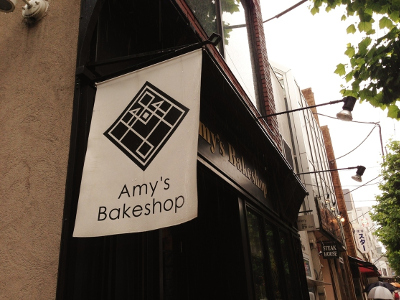
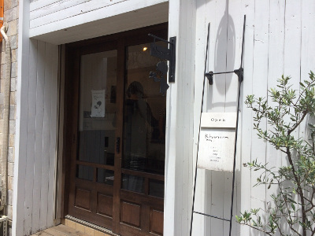
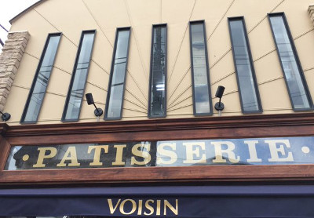
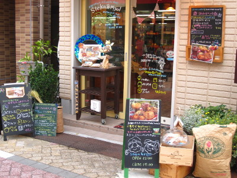
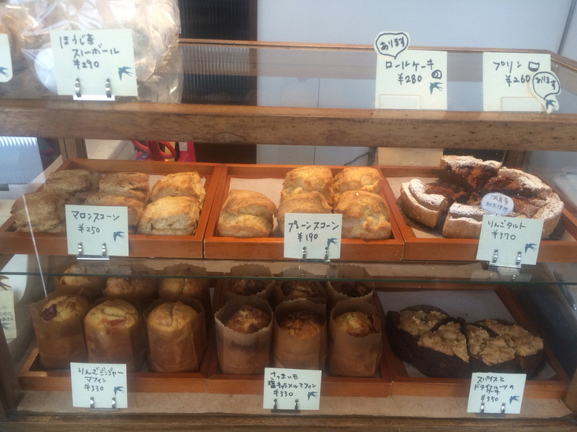
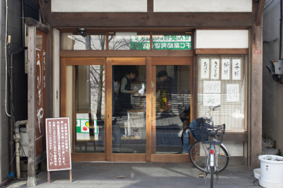

たくさんのパンを紹介してきましたが、パンと同じくらい焼き菓子も大好きなので、
おまけに少しだけお菓子のおいしいお店も紹介します。
杉並区、とくに西荻窪にはおいしいパン屋さんも焼き菓子屋さんもたくさんあるので、
パン屋お菓子を片手に、お散歩がてら散策するのもおすすめです。
Amy's Bake SHOP

西荻窪にある有名なベイクショップ。
マフィンやクッキーなどたくさんの焼き菓子が並びます。
NYスタイルのどっしりとしたケーキです。
住所：東京都杉並区西荻北2-26-8 1F
tel:03-5382-1193
営業時間:11:00～19:00
定休日:月・火
Khanam

西荻窪にあるこちらも有名なベイクショップ。
卵、乳製品、白砂糖、動物性食品は使わない、自然でからだにやさしいお菓子が並びます。
アレルギーのお子さんにも安心してあげられます。
看板のカナムちゃんも人気ものです。
住所：東京都杉並区松庵3-38-20 KURA尾崎
tel:03-5930-1837
営業時間:12：00～19：00
定休日:月・火
voisin

荻窪から浜田山に移転してきた人気のケーキ屋さん。
ケーキはもちろん、焼き菓子の品揃えが豊富で、味ももちろんかなりおいしいです。
住所：東京都杉並区浜田山3-34-27
tel:03-3303-3210
営業時間:11:00～20:00
定休日:不定休(大体火曜をお休みしてるみたいです)
Steka＆Mjol

高円寺にある人気のベイクショップ。
マフィンやスコーンも人気ですが、オーダーもできるアイシングクッキーがプレゼントにもおすすめ。
オーダーにはかなり時間がかかるので注意が必要です。
住所：東京都杉並区高円寺南2-20-13 1F
tel:03-6454-6718
営業時間:12:00～18:00
定休日:火・水
ルスティカ菓子店

阿佐ヶ谷駅からすこし歩いたところにあるかわいいお菓子屋さんです。
素朴でおいしいお菓子が並びます。
住所：東京都杉並区阿佐ヶ谷北4-21-8
tel:03-5356-8856
営業時間:11:30～19:00
定休日:月・火
うさぎや

阿佐ヶ谷にある有名な和菓子店。
おしゃれな洋風のお店ではないですが、どらやきが絶品。
うさぎ焼きも手土産におすすめです。
夏には店内でかき氷もできます。
住所：東京都杉並区阿佐谷北1-3-7
tel:03-3338-9230
営業時間:9:00～19:00
定休日:土・第三金曜